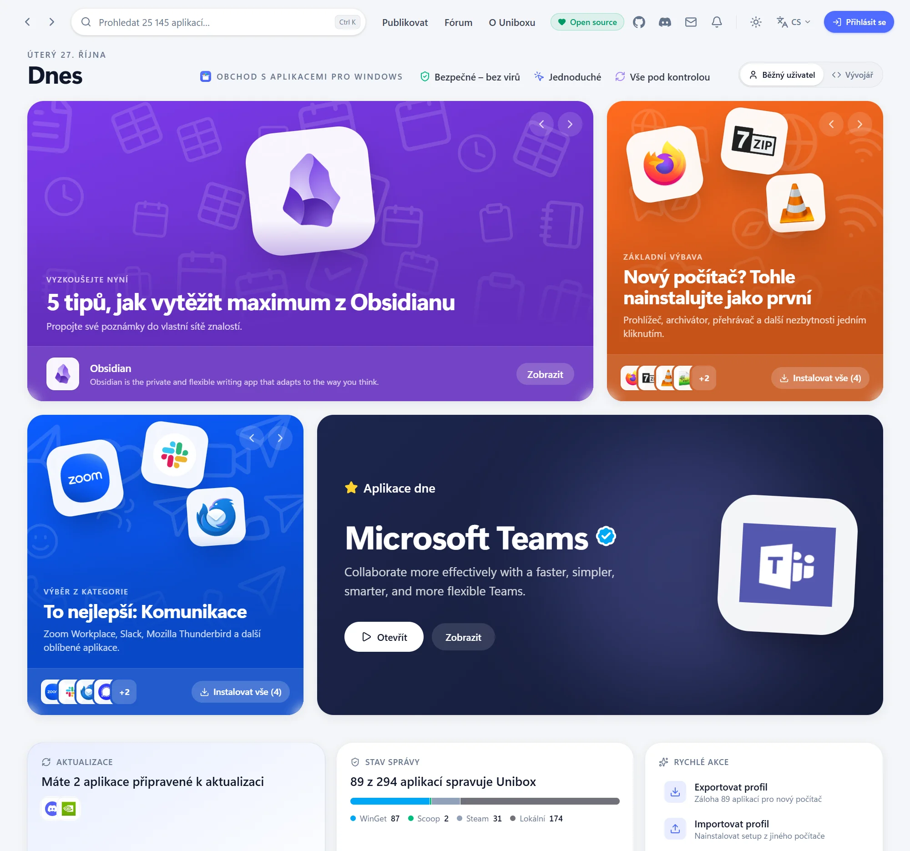
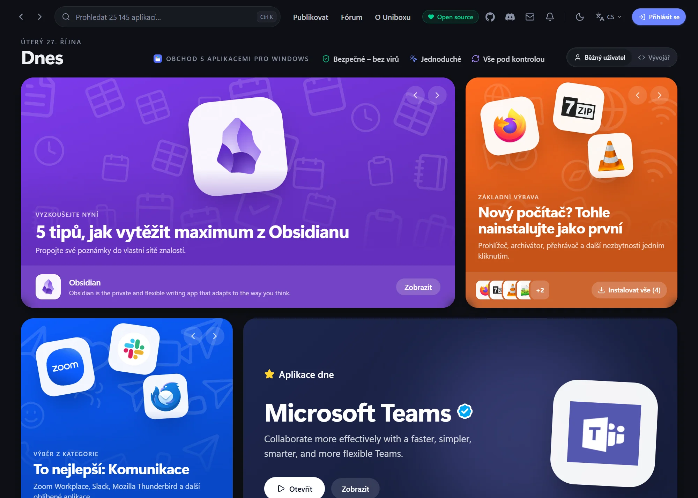

Bezpečné – bez virů
Jen oficiální repozitáře správců balíčků. Každý instalátor se před spuštěním ověří kontrolním součtem SHA-256.
Unibox je moderní obchod s aplikacemi pro Windows 10 a 11. Najdete v něm přes 25 000 aplikací z oficiálních repozitářů – nainstalujete je jedním kliknutím, bez hledání instalátorů po webu, bez reklam a přibalených doplňků.


Co je nového
Dvě největší novinky aktuální verze Uniboxu. Všechny ostatní změny najdete v Novinkách.
Všechny novinkyKategorie, hledání i nainstalované aplikace vykreslují jen to, co je vidět – scrollování zůstává svižné až na konec seznamu.
Verze 0.1.15Nainstalované aplikace a nastavení fungují i offline. Unibox řekne, co počká na připojení, a po jeho návratu data načte znovu.
Proč Unibox
Jen oficiální repozitáře správců balíčků. Každý instalátor se před spuštěním ověří kontrolním součtem SHA-256.
Jedno kliknutí místo průvodců instalací. Žádné „Další, Další, Dokončit“, žádné přibalené doplňky ani reklamy.
Aktualizace a odinstalace všech aplikací na jednom místě – i těch, které jste nainstalovali dřív a jinak.
Prozkoumejte Unibox
Podrobnosti mají vlastní stránky – vyberte, co vás zajímá.
Obchod jako v telefonu: katalog, detail aplikace, aktualizace, odinstalace a běh na pozadí.
Co funguje naostro: WinGet, Chocolatey, Scoop a správci pro vývojáře s příkazy ke zkopírování.
Co je nového v každé verzi, od první veřejné verze 0.1.0.
Jak si Unibox stojí vedle Ninite, UniGetUI, Chocolatey a Winstall.app.
Kam Unibox míří dál a co už je hotové.
SmartScreen, účet, bezpečnost a další časté otázky.
0 Kčměsíčně, navždy
Kód je veřejný, a proto zůstane zdarma. Vaše data zůstávají ve vašem počítači, ať aplikace spravujete, aktualizujete, nebo instalujete.
Verze 0.1.15 · preview · zdarma a open source · co je nového
Požadavky: Windows 10 / 11, 64bit, WebView2 (ve Windows je předinstalovaný).
Instalátor zatím není digitálně podepsaný – co dělat s varováním Edge a SmartScreenu.
Zásady podepisování kódu · Ochrana soukromí